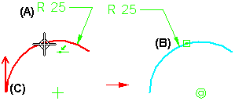
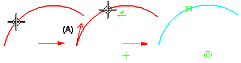
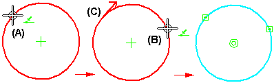

Split command
Use the Split command to split open and closed elements at the location you specify. You can use this command when working with 2D elements such as profiles, sketches, cutting planes lines, and so forth to split a 2D wireframe element into two separate elements.
When you split an element, appropriate geometric relationships are applied automatically. For example, when you split an arc, a connect relationship is applied at the split point, and a concentric relationship is applied at the center point of the resultant arcs.

Existing relationships may be deleted when splitting elements.
Because you can apply dimensions and callouts to 2D elements, or construct surface and solid features from 2D elements, a direction arrow is used to indicate which portion of the original element any downstream elements are reattached to. For example, when you split an arc that has a dimension applied (A), the dimension is reattached to the portion of the arc (B) where the direction arrow originates (C).

When splitting open elements, the direction arrow is displayed at the start point of the original element (A).

When splitting closed elements, you must define two split points (A) (B). The direction arrow is displayed at the first split point you define (C).
